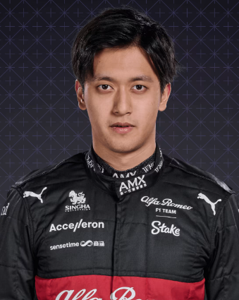

Alfa Romeo
En perfil
El nombre Alfa Romeo hace alarde de conexiones con la Fórmula 1 que se remontan al inicio del campeonato en 1950. Avance rápido hasta el siglo XXI y el estilo italiano se combina con la sensibilidad suiza en una nueva era para el equipo anteriormente conocido como Sauber.
2022
Sube tres lugares en la clasificación, con Valtteri Bottas disfrutando de su papel de líder del equipo y el novato Zhou Guanyu más que ganándose su lugar. Llegue a los titulares al final de la temporada con la noticia de que el equipo se convertirá en el equipo oficial de Audi a partir de 2026..
2021
Cayó al noveno lugar en la tabla detrás de Williams, con 10 de sus 13 puntos anotados por el ex campeón Kimi Raikkonen, quien termina su carrera en la F1 al final de la temporada. Prepare una alineación completamente nueva del ex piloto de Mercedes Valtteri Bottas y el recién llegado chino Zhou Guanyu para 2022.
2020
Otra temporada de máximos poco frecuentes (ambos autos anotaron puntos en su carrera de casa en Imola y ambos llegaron a la Q3 en Turquía) nuevamente termina con P8 en la general, Kimi Raikkonen y Antonio Giovinazzi acumulando solo ocho puntos entre ellos.
2019
El progreso se ralentiza, ya que el C38 resulta frustrantemente inconsistente, incluso con el experimentado Kimi Raikkonen al volante. Sin embargo, retiene P8 en la clasificación, 22 de sus 57 puntos se produjeron en la penúltima ronda llena de acontecimientos de la temporada en Brasil.
Pilotos
Valtteri Bottas

Zhou Guanyu